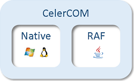

Reading from and writing to a COM port is implemented through the standard Java InputStream and OutputStream interfaces respectively.

CelerCOM uses a native JNI driver for the following Operating Systems (OS) and CPU architectures:
| Windows | Linux | |
|---|---|---|
| x86 (32 bit) | ✓ | ✓ |
| AMD64 (64 bit) | ✓ | ✓ |
| ARM (32 bit) | ✓ |
For any other OS or architecture a pure Java implementaion is used, which is based on the RandomAccessFile (RAF) API. The RAF driver is also used as a fallback if the native driver is not available. The native driver is preferred: